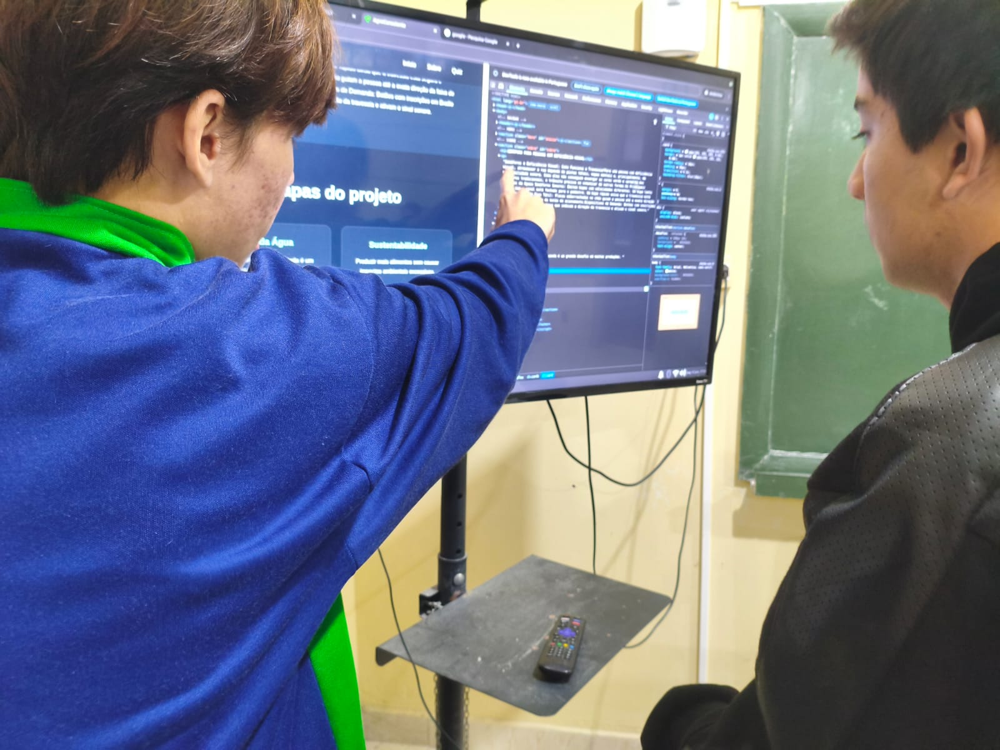
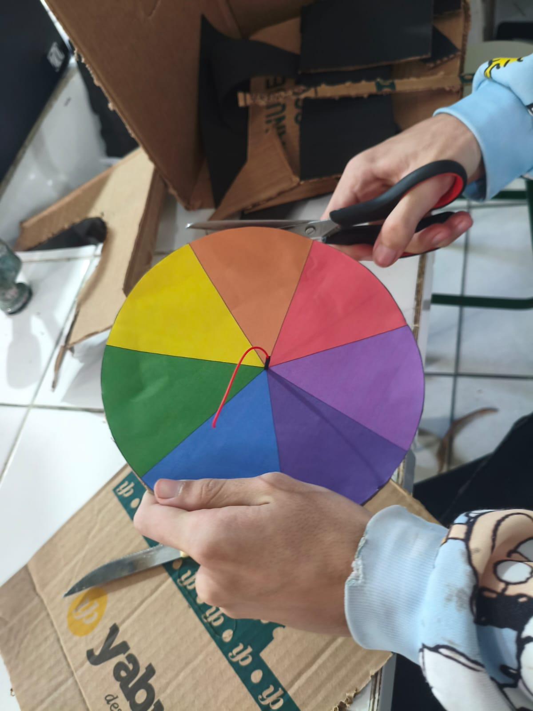
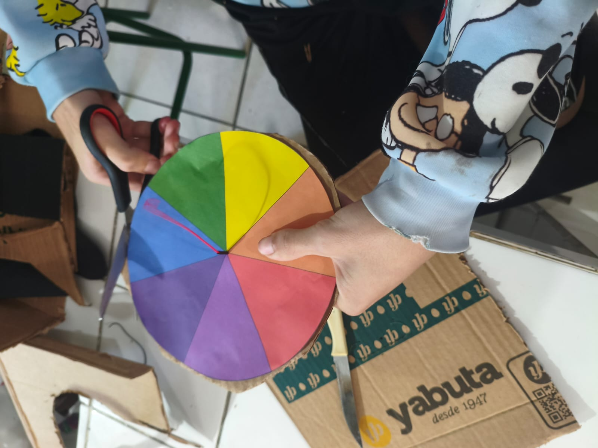
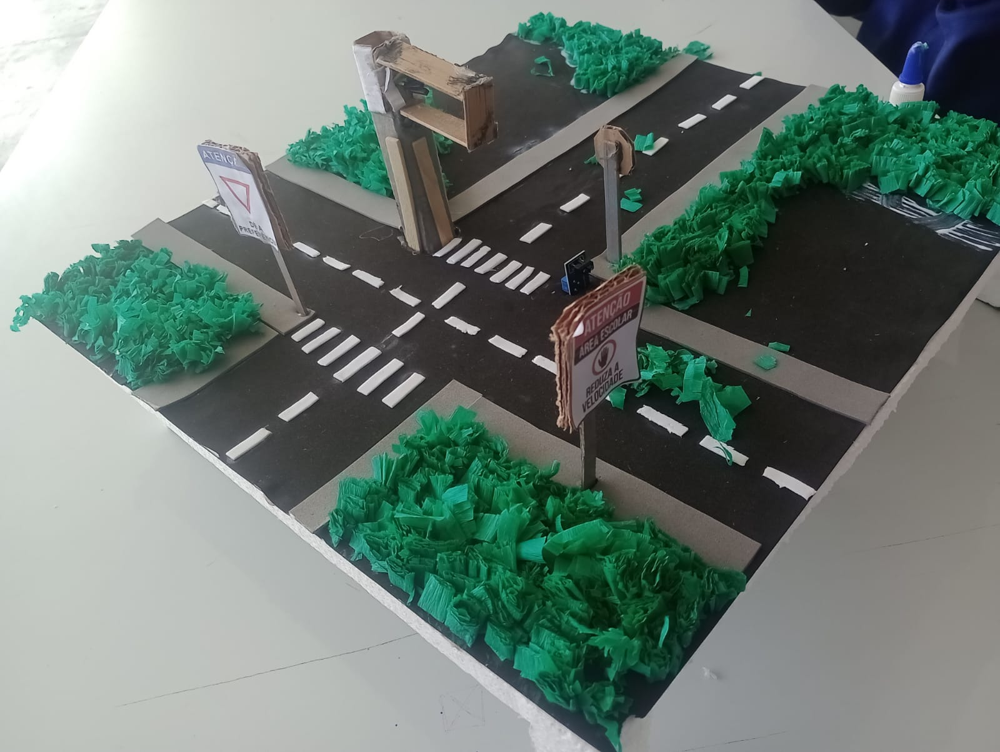

TECNOLOGIA • INOVAÇÃO • MOBILIDADE
SEMÁFORO
INTELIGENTE
Uma solução inteligente para melhorar a mobilidade urbana e tornar o trânsito mais eficiente.
CONHEÇA O PROJETOSobre o projeto
O Semáforo Inteligente utiliza tecnologia para tornar o controle do trânsito mais eficiente. O projeto busca melhorar a organização dos veículos e contribuir para uma mobilidade urbana mais inteligente.
Galeria do Projeto
Confira algumas imagens do Semáforo Inteligente.

Protótipo do site
Conheça o protótipo do nosso projeto.

Tecnologia
Detalhes da tecnologia utilizada.

Funcionamento
Veja o projeto em funcionamento.

Resultado
O resultado final do Semáforo Inteligente.